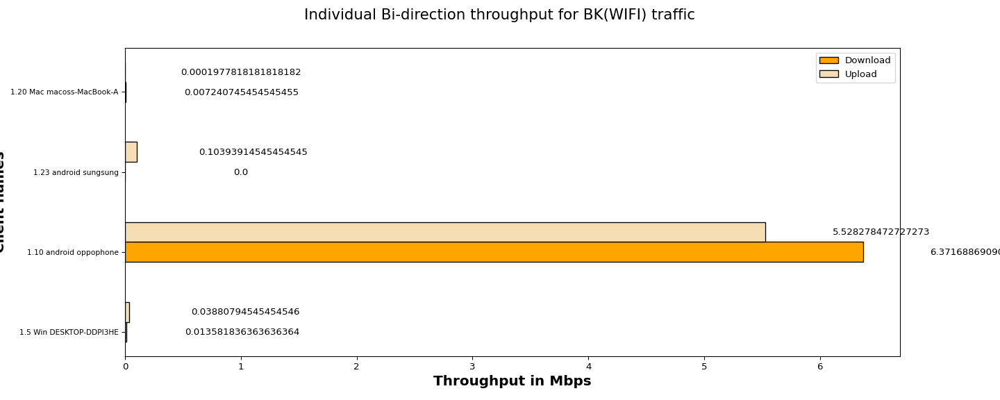
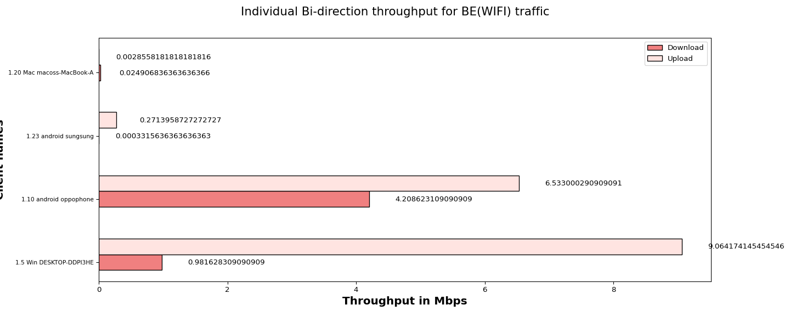
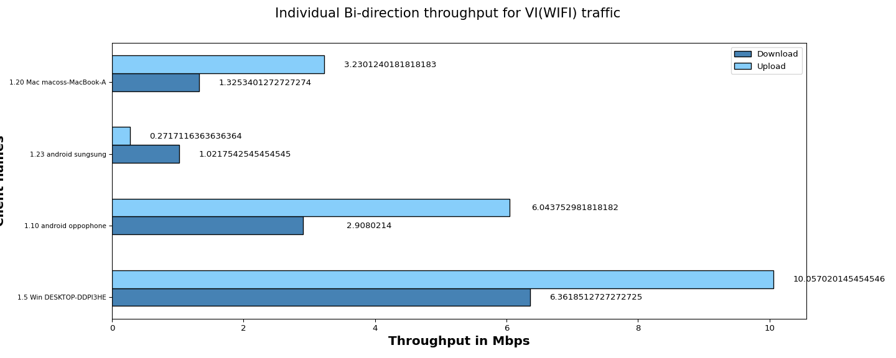
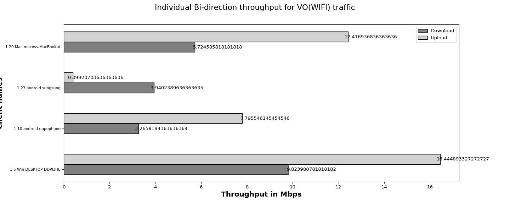

The objective of the QoS (Quality of Service) traffic throughput test is to measure the maximum achievable throughput of a network under specific QoS settings and conditions.By conducting this test, we aim to assess the capacity of network to handle high volumes of traffic while maintaining acceptable performance levels,ensuring that the network meets the required QoS standards and can adequately support the expected user demands.
| Test Configuration |
|
||||||||||||||||||||||||||||||||||||||||
| No of Stations | Throughput for Load 100.0 Mbps-upload | Throughput for Load 100.0 Mbps-download |
|---|---|---|
| 4 | BK : 5.67, BE : 15.87, VI: 19.6, VO: 37.06 | BK : 6.39, BE : 5.22, VI: 11.62, VO: 22.75 |
The below graph represents overall Bi-direction throughput for all connected stations running BK, BE, VO, VI traffic with different intended loadsUpload:100.0 Mbps,Download:100.0 Mbps per tos

The below graph represents individual throughput for 4 clients running BK (WiFi) traffic. X- axis shows “Throughput in Mbps” and Y-axis shows “number of clients”.

| Client Name | MAC | SSID | Type of traffic | Offered upload rate | Offered download rate | Observed average upload rate | Observed average download rate | Observed Upload Drop (%) | Observed Download Drop (%) | Expected Bi-direction rate(Mbps) | Status |
|---|---|---|---|---|---|---|---|---|---|---|---|
| 1.5 Win DESKTOP-DDPI3HE | e4:a4:71:93:70:e7 | NETGEAR_2G_wpa2 | Background | 100.0 Mbps | 100.0 Mbps | 0.03880794545454546 Mbps | 0.013581836363636364 Mbps | 45.303030 | 78.787879 | 30 | FAIL |
| 1.10 android oppophone | e6:5b:3a:c3:48:ed | NETGEAR_2G_Open | Background | 100.0 Mbps | 100.0 Mbps | 5.528278472727273 Mbps | 6.371688690909091 Mbps | 13.004777 | 16.171715 | 30 | FAIL |
| 1.23 android sungsung | 46:ca:12:8c:58:67 | NETGEAR_2G_wpa2 | Background | 100.0 Mbps | 100.0 Mbps | 0.10393914545454545 Mbps | 0.0 Mbps | 8.522727 | 61.818182 | 30 | FAIL |
| 1.20 Mac macoss-MacBook-Air.local | 30:35:ad:c5:e1:be | NETGEAR_2G_wpa2 | Background | 100.0 Mbps | 100.0 Mbps | 0.0001977818181818182 Mbps | 0.007240745454545455 Mbps | 87.272727 | 54.545455 | 30 | FAIL |
The below graph represents individual throughput for 4 clients running BE (WiFi) traffic. X- axis shows “number of clients” and Y-axis shows “Throughput in Mbps”.

| Client Name | MAC | SSID | Type of traffic | Offered upload rate | Offered download rate | Observed average upload rate | Observed average download rate | Observed Upload Drop (%) | Observed Download Drop (%) | Expected Bi-direction rate(Mbps) | Status |
|---|---|---|---|---|---|---|---|---|---|---|---|
| 1.5 Win DESKTOP-DDPI3HE | e4:a4:71:93:70:e7 | NETGEAR_2G_wpa2 | Besteffort | 100.0 Mbps | 100.0 Mbps | 9.064174145454546 Mbps | 0.981628309090909 Mbps | 3.923550 | 57.792365 | 30 | FAIL |
| 1.10 android oppophone | e6:5b:3a:c3:48:ed | NETGEAR_2G_Open | Besteffort | 100.0 Mbps | 100.0 Mbps | 6.533000290909091 Mbps | 4.208623109090909 Mbps | 13.451325 | 17.787438 | 30 | FAIL |
| 1.23 android sungsung | 46:ca:12:8c:58:67 | NETGEAR_2G_wpa2 | Besteffort | 100.0 Mbps | 100.0 Mbps | 0.2713958727272727 Mbps | 0.0003315636363636363 Mbps | 79.103367 | 99.191919 | 30 | FAIL |
| 1.20 Mac macoss-MacBook-Air.local | 30:35:ad:c5:e1:be | NETGEAR_2G_wpa2 | Besteffort | 100.0 Mbps | 100.0 Mbps | 0.0028558181818181816 Mbps | 0.024906836363636366 Mbps | 100.000000 | 63.030303 | 30 | FAIL |
The below graph represents individual throughput for 4 clients running VI (WiFi) traffic. X- axis shows “number of clients” and Y-axis shows “Throughput in Mbps”.

| Client Name | MAC | SSID | Type of traffic | Offered upload rate | Offered download rate | Observed average upload rate | Observed average download rate | Observed Upload Drop (%) | Observed Download Drop (%) | Expected Bi-direction rate(Mbps) | Status |
|---|---|---|---|---|---|---|---|---|---|---|---|
| 1.5 Win DESKTOP-DDPI3HE | e4:a4:71:93:70:e7 | NETGEAR_2G_wpa2 | Video | 100.0 Mbps | 100.0 Mbps | 10.057020145454546 Mbps | 6.3618512727272725 Mbps | 0.145587 | 11.418664 | 30 | FAIL |
| 1.10 android oppophone | e6:5b:3a:c3:48:ed | NETGEAR_2G_Open | Video | 100.0 Mbps | 100.0 Mbps | 6.043752981818182 Mbps | 2.9080214 Mbps | 7.210580 | 6.399471 | 30 | FAIL |
| 1.23 android sungsung | 46:ca:12:8c:58:67 | NETGEAR_2G_wpa2 | Video | 100.0 Mbps | 100.0 Mbps | 0.2717116363636364 Mbps | 1.0217542545454545 Mbps | 31.809703 | 24.225324 | 30 | FAIL |
| 1.20 Mac macoss-MacBook-Air.local | 30:35:ad:c5:e1:be | NETGEAR_2G_wpa2 | Video | 100.0 Mbps | 100.0 Mbps | 3.2301240181818183 Mbps | 1.3253401272727274 Mbps | 0.842355 | 23.425415 | 30 | FAIL |
The below graph represents individual throughput for 4 clients running VO (WiFi) traffic. X- axis shows “number of clients” and Y-axis shows “Throughput in Mbps”.

| Client Name | MAC | SSID | Type of traffic | Offered upload rate | Offered download rate | Observed average upload rate | Observed average download rate | Observed Upload Drop (%) | Observed Download Drop (%) | Expected Bi-direction rate(Mbps) | Status |
|---|---|---|---|---|---|---|---|---|---|---|---|
| 1.5 Win DESKTOP-DDPI3HE | e4:a4:71:93:70:e7 | NETGEAR_2G_wpa2 | Voice | 100.0 Mbps | 100.0 Mbps | 16.444893327272727 Mbps | 9.823980781818182 Mbps | 0.010674 | 6.129476 | 30 | FAIL |
| 1.10 android oppophone | e6:5b:3a:c3:48:ed | NETGEAR_2G_Open | Voice | 100.0 Mbps | 100.0 Mbps | 7.795546145454546 Mbps | 3.2658194363636364 Mbps | 9.678345 | 33.224774 | 30 | FAIL |
| 1.23 android sungsung | 46:ca:12:8c:58:67 | NETGEAR_2G_wpa2 | Voice | 100.0 Mbps | 100.0 Mbps | 0.39920703636363636 Mbps | 3.9402389636363635 Mbps | 48.280048 | 48.353352 | 30 | FAIL |
| 1.20 Mac macoss-MacBook-Air.local | 30:35:ad:c5:e1:be | NETGEAR_2G_wpa2 | Voice | 100.0 Mbps | 100.0 Mbps | 12.416936836363636 Mbps | 5.724585818181818 Mbps | 2.488391 | 30.168760 | 30 | FAIL |
| Information |
|
||||